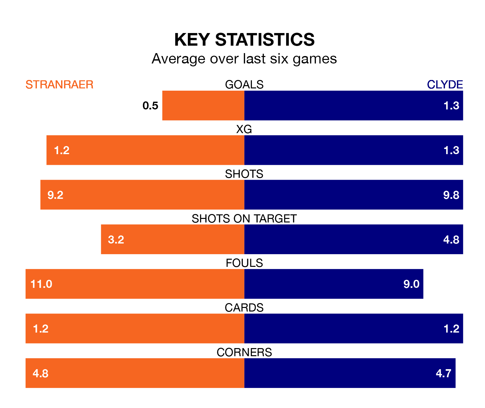

Saturday's match at Stair Park sees the league's two bottom sides face each other, as Stranraer host rock-bottom Clyde.
Stranraer have picked up 23 points from their first 23 League Two games, with six wins and five draws.
That is eight points more than the Bully Wee have collected, having won two and drawn nine.
In the last 10 years, Stranraer and Clyde have played each other on eight occasions. They won three each, and they drew twice.
On average, Stranraer scored 1.8 goals and the Bully Wee 2.1 in those matches.
Their last meeting was on December 9, when they played out a 2-2 draw.
Stranraer are in bad form in League Two, with one win and a draw from their last six games.
With a win and three draws over that period, Clyde's form is slightly better – they have taken six points from 18, compared to the home team's four.
With 24 goals in 22 games so far this season, Stranraer are the league's third-lowest scorers with 1.1 goals per game. And they are conceding more than average, letting in 39 goals at a rate of 1.8 per game.
The Bully Wee are also below average scorers, with 1.1 goals per game, compared to a league average of 1.3. They have conceded 1.9 goals per game.
In Martin Rennie, the visitors have one of the league's most on-form strikers so far this season. He has notched six goals in 16 appearances, to sit sixth in the scoring charts.
Stranraer's top scorers, with four goals each, are Thomas Orr and James Dolan.
Stranraer's last match was on February 3, a 0-0 draw against Bonnyrigg Rose Athletic.
Clyde drew 1-1 with Peterhead last time out, also on February 3, with Barry Cuddihy on the scoresheet.
Updated: 11:47 (UTC), 05/02/24